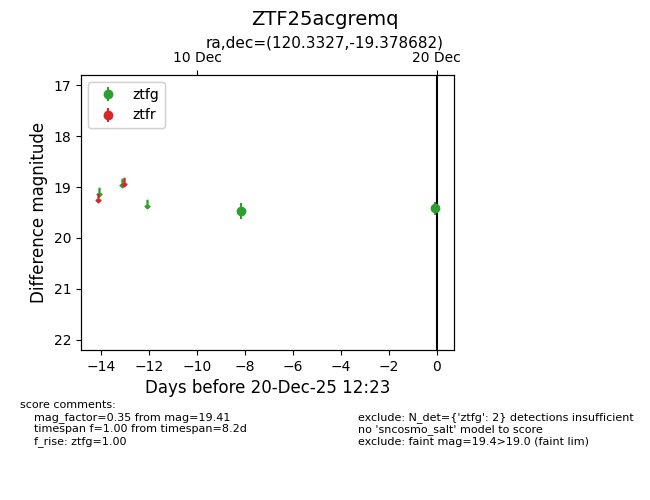
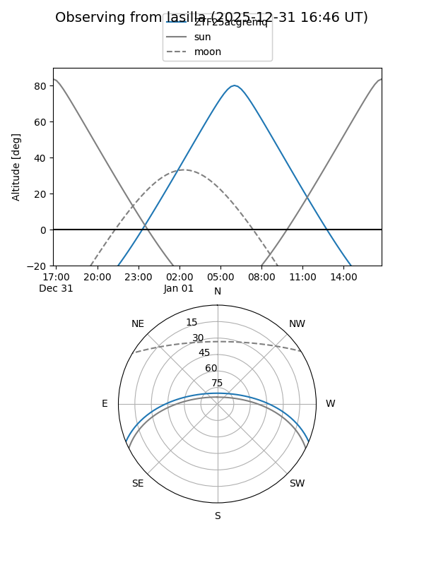
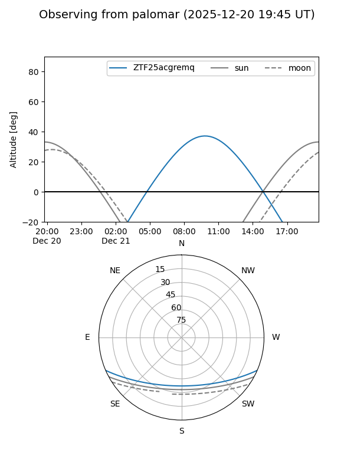
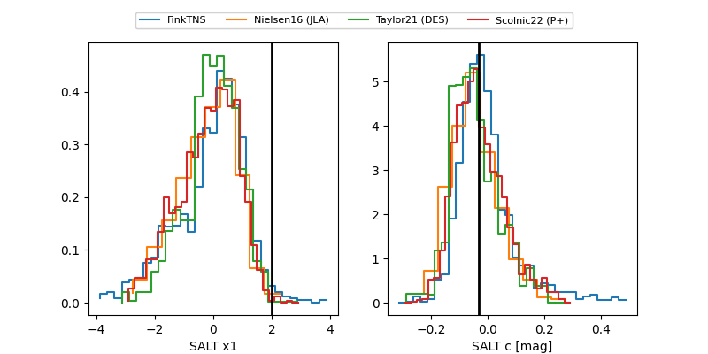

ZTF25acgremq
Target ZTF25acgremq at 2025-12-22 14:03
Aliases and brokers:
FINK: fink-portal.org/ZTF25acgremq
Lasair: lasair-ztf.lsst.ac.uk/objects/ZTF25acgremq
ALeRCE: alerce.online/object/ZTF25acgremq
alt names
ZTF25acgremq (ztf,fink_ztf)
Coordinates:
equatorial (ra, dec) = 120.3327,-19.37868
equatorial (HMS+DMS) = 08:01:19.84,-19:22:43.26
galactic (l, b) = (238.1862,+5.78454)
Flags:
Photometry:
last ztfg=19.42, ztfr=19.25
3 ztfg, 2 ztfr detections
Lightcurve

Visibility


Additional plots
